Logique et raisonnements
Le langage de base des mathématiques : propositions, connecteurs, quantificateurs, et surtout les modes de raisonnement (direct, récurrence, contraposition, absurde, analyse-synthèse) qui structurent toutes les démonstrations de l'année.
1. Résumé de cours détaillé
1.1 Propositions, négation, connecteurs
- \(P \text{ et } Q\) (noté \(P\wedge Q\)) est vraie ssi les deux le sont.
- \(P \text{ ou } Q\) (noté \(P\vee Q\)) est vraie ssi au moins l'une l'est.
1.2 Implication, réciproque, équivalence
| \(P\) | \(Q\) | \(\lnot P\) | \(P\wedge Q\) | \(P\vee Q\) | \(P\Rightarrow Q\) | \(P\iff Q\) |
|---|---|---|---|---|---|---|
| V | V | F | V | V | V | V |
| V | F | F | F | V | F | F |
| F | V | V | F | V | V | F |
| F | F | V | F | F | V | V |
1.3 Quantificateurs
- \(\forall x\in E,\ P(x)\) : « pour tout \(x\), \(P(x)\) est vraie ».
- \(\exists x\in E,\ P(x)\) : « il existe (au moins un) \(x\) tel que \(P(x)\) ».
- \(\exists!\,x\in E,\ P(x)\) : « il existe un unique \(x\) tel que \(P(x)\) ».
1.4 Les modes de raisonnement
Ex. \(n\) pair \(\Rightarrow n^2\) pair : \(n=2k \Rightarrow n^2=4k^2=2(2k^2)\).
Ex. \(x+1=3-x \iff 2x=2 \iff x=1\).
Ex. \(\max(x,y)=\dfrac{x+y+|x-y|}{2}\) se prouve en séparant \(x\geqslant y\) et \(x
- Initialisation : \(P(n_0)\) est vraie.
- Hérédité : \(\forall n\geqslant n_0,\ P(n)\Rightarrow P(n+1)\).
Ex. pour « \(n^2\) pair \(\Rightarrow n\) pair », on montre « \(n\) impair \(\Rightarrow n^2\) impair ».
Ex. \(\sqrt2\) irrationnel : supposer \(\sqrt2=p/q\) irréductible mène à \(p\) et \(q\) tous deux pairs.
- Analyse : on suppose qu'une solution existe et on en déduit les conditions nécessaires (candidats possibles).
- Synthèse : on vérifie lesquels de ces candidats sont effectivement solutions.
2. Exercices d'entraînement (créés) avec corrections
1) Négation de \(\mathcal P\)
Étape 1 : échanger les quantificateurs
\(\forall x\) devient \(\exists x\), et \(\exists y\) devient \(\forall y\).
Étape 2 : nier le cœur
La négation de \(x+y>0\) est \(x+y\leqslant 0\).
2) \(\mathcal P\) est-elle vraie ?
Étape 1 : traduire en français
Pour chaque réel \(x\), on doit trouver un réel \(y\) tel que \(x+y>0\).
Étape 2 : construire \(y\) en fonction de \(x\)
Le \(\exists y\) vient après le \(\forall x\) : \(y\) a le droit de dépendre de \(x\). On fixe \(x\) quelconque et on pose \(y=1-x\).
\[ x+y = x+(1-x) = 1 > 0 \]Ce choix marche pour tout \(x\).
1) Démonstration par récurrence
On raisonne par récurrence sur \(n\geqslant 1\).
Étape 1 : la propriété
\[ P(n) :\quad \exists k\in\mathbb N,\ 7^n-1=6k \]Étape 2 : initialisation (\(n=1\))
\[ 7^1-1 = 6 = 6\times 1 \]Donc \(P(1)\) est vraie.
Étape 3 : hérédité
Soit \(n\geqslant 1\) tel que \(P(n)\) est vraie : \(7^n-1=6k\) avec \(k\in\mathbb N\). On fait apparaître \(7^n-1\) dans \(7^{n+1}-1\) :
\[ 7^{n+1}-1 = 7\times 7^n - 1 = 7\big(7^n-1\big) + 7 - 1 \]On remplace \(7^n-1\) par \(6k\) :
\[ 7^{n+1}-1 = 7\times 6k + 6 = 6\,(7k+1) \]Comme \(7k+1\in\mathbb N\), \(P(n+1)\) est vraie.
Étape 4 : conclusion
1) Existence et unicité de la décomposition
On raisonne par analyse-synthèse.
Étape 1 : analyse (on suppose qu'une décomposition existe)
On suppose \(f=p+i\), avec \(p\) paire et \(i\) impaire. Pour tout \(x\) :
\[ f(x)=p(x)+i(x) \] \[ f(-x)=p(-x)+i(-x)=p(x)-i(x) \]On additionne les deux lignes, puis on les soustrait :
\[ p(x)=\frac{f(x)+f(-x)}{2} \qquad\qquad i(x)=\frac{f(x)-f(-x)}{2} \]Si une décomposition existe, \(p\) et \(i\) sont forcément ces deux fonctions : c'est l'unicité.
Étape 2 : synthèse (on vérifie que ces candidats conviennent)
On définit \(p\) et \(i\) par les formules ci-dessus. Pour tout \(x\) :
- \(p(-x)=\dfrac{f(-x)+f(x)}{2}=p(x)\) : \(p\) est paire.
- \(i(-x)=\dfrac{f(-x)-f(x)}{2}=-\dfrac{f(x)-f(-x)}{2}=-i(x)\) : \(i\) est impaire.
- \(p(x)+i(x)=\dfrac{f(x)+f(-x)+f(x)-f(-x)}{2}=f(x)\).
C'est l'existence.
3. Correction intégrale du TD n°1 — Logique & Raisonnements
La feuille de TD ne fournit que les énoncés (pas de corrigé officiel) : les 16 exercices sont résolus intégralement ci-dessous, chaque sous-question traitée.
Partie 1 — Nier une proposition
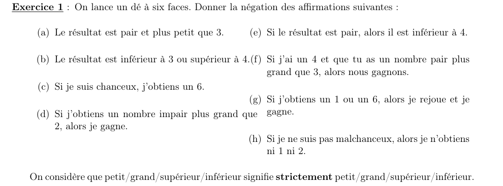
a) « pair et \(<3\) »
Étape 1 : forme logique
C'est « \(A\) et \(B\) », avec \(A\) : « pair » et \(B\) : « \(<3\) ».
Étape 2 : négation
Le « et » devient « ou ». « pair » devient « impair », « \(<3\) » devient « \(\geqslant 3\) ».
b) « \(<3\) ou \(>4\) »
Étape 1 : forme logique
C'est « \(A\) ou \(B\) » : le « ou » devient « et ».
Étape 2 : négation
« \(<3\) » devient « \(\geqslant 3\) », « \(>4\) » devient « \(\leqslant 4\) ». Sur un dé, cela laisse 3 et 4.
c) « Si je suis chanceux, j'obtiens un 6 »
Étape 1 : forme logique
\(A\) : « je suis chanceux », \(B\) : « j'obtiens un 6 ».
Étape 2 : négation
d) « Si (impair et \(>2\)) alors je gagne »
Étape 1 : forme logique
\(A\) : « impair et \(>2\) », \(B\) : « je gagne ».
Étape 2 : négation
On garde \(A\) tel quel et on nie \(B\).
e) « Si pair, alors \(<4\) »
Étape 1 : forme logique
\(A\) : « pair », \(B\) : « \(<4\) ».
Étape 2 : négation
\(\lnot B\) : « \(\geqslant 4\) ».
f) « Si (j'ai 4 et tu as pair \(>3\)) alors nous gagnons »
Étape 1 : forme logique
\(A\) : « j'ai 4 et tu as un pair \(>3\) », \(B\) : « nous gagnons ».
Étape 2 : négation
g) « Si (1 ou 6) alors (je rejoue et je gagne) »
Étape 1 : forme logique
C'est \(A\Rightarrow(B\text{ et }C)\), avec \(A\) : « 1 ou 6 », \(B\) : « je rejoue », \(C\) : « je gagne ».
Étape 2 : négation de l'implication
\[ \operatorname{non}\big(A\Rightarrow(B\text{ et }C)\big) = A \text{ et } \operatorname{non}(B\text{ et }C) \]Étape 3 : De Morgan sur la conclusion
\[ \operatorname{non}(B\text{ et }C) = \lnot B\text{ ou }\lnot C \]h) « Si (non malchanceux) alors (ni 1 ni 2) »
Étape 1 : forme logique
\(A\) : « je ne suis pas malchanceux ». \(B\) : « ni 1 ni 2 », c'est-à-dire « pas 1 et pas 2 ».
Étape 2 : nier la conclusion
Par De Morgan, \(\lnot B\) : « 1 ou 2 ».
Étape 3 : négation de l'implication
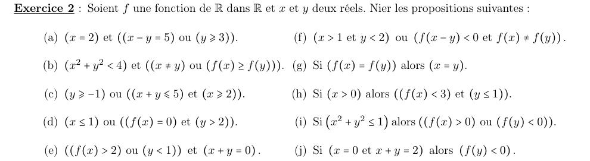
a) \((x=2)\text{ et }((x-y=5)\text{ ou }(y\geqslant 3))\)
Étape 1 : le « et » principal devient « ou »
\[ \operatorname{non}(x=2)\ \text{ou}\ \operatorname{non}\big((x-y=5)\text{ ou }(y\geqslant 3)\big) \]Étape 2 : De Morgan dans la parenthèse, puis les comparateurs
b) \((x^2+y^2<4)\text{ et }((x\neq y)\text{ ou }(f(x)\geqslant f(y)))\)
Étape 1 : le « et » principal devient « ou »
On nie \(x^2+y^2<4\) en \(x^2+y^2\geqslant 4\).
Étape 2 : la parenthèse « ou » devient « et »
\(x\neq y\) devient \(x=y\), et \(f(x)\geqslant f(y)\) devient \(f(x)<f(y)\).
c) \((y\geqslant -1)\text{ ou }((x+y\leqslant 5)\text{ et }(x\geqslant 2))\)
Étape 1 : le « ou » principal devient « et »
\(y\geqslant -1\) devient \(y<-1\).
Étape 2 : la parenthèse « et » devient « ou »
d) \((x\leqslant 1)\text{ ou }((f(x)=0)\text{ et }(y>2))\)
Étape 1 : le « ou » principal devient « et »
\(x\leqslant 1\) devient \(x>1\).
Étape 2 : la parenthèse « et » devient « ou »
e) \(((f(x)>2)\text{ ou }(y<1))\text{ et }(x+y=0)\)
Étape 1 : le « et » principal devient « ou »
Étape 2 : la parenthèse « ou » devient « et »
\(f(x)>2\) devient \(f(x)\leqslant 2\) ; \(y<1\) devient \(y\geqslant 1\) ; \(x+y=0\) devient \(x+y\neq 0\).
f) \((x>1\text{ et }y<2)\text{ ou }(f(x-y)<0\text{ et }f(x)\neq f(y))\)
Étape 1 : le « ou » principal devient « et »
Étape 2 : chaque parenthèse « et » devient « ou »
g) \((f(x)=f(y))\Rightarrow(x=y)\)
Étape 1 : on garde l'hypothèse, on nie la conclusion
h) \((x>0)\Rightarrow((f(x)<3)\text{ et }(y\leqslant 1))\)
Étape 1 : on garde l'hypothèse \(x>0\)
Étape 2 : on nie la conclusion par De Morgan
\[ \operatorname{non}\big((f(x)<3)\text{ et }(y\leqslant 1)\big) = (f(x)\geqslant 3)\text{ ou }(y>1) \]i) \((x^2+y^2\leqslant 1)\Rightarrow((f(x)>0)\text{ ou }(f(y)<0))\)
Étape 1 : on garde l'hypothèse
Étape 2 : on nie la conclusion par De Morgan
\[ \operatorname{non}\big((f(x)>0)\text{ ou }(f(y)<0)\big) = (f(x)\leqslant 0)\text{ et }(f(y)\geqslant 0) \]j) \((x=0\text{ et }x+y=2)\Rightarrow(f(y)<0)\)
Étape 1 : on garde l'hypothèse, on nie la conclusion
\(f(y)<0\) devient \(f(y)\geqslant 0\).
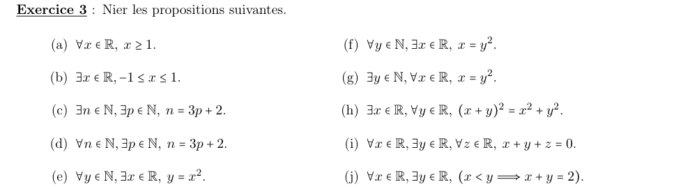
a) \(\forall x\in\mathbb R,\ x\geqslant 1\)
Étape 1 : \(\forall\) devient \(\exists\)
Étape 2 : \(x\geqslant 1\) devient \(x<1\)
b) \(\exists x\in\mathbb R,\ -1\leqslant x\leqslant 1\)
Étape 1 : \(\exists\) devient \(\forall\)
Étape 2 : nier l'encadrement
\(-1\leqslant x\leqslant 1\) signifie \((x\geqslant -1\text{ et }x\leqslant 1)\). Par De Morgan, sa négation est \((x<-1\text{ ou }x>1)\).
c) \(\exists n\in\mathbb N,\exists p\in\mathbb N,\ n=3p+2\)
Étape 1 : les deux \(\exists\) deviennent \(\forall\)
Étape 2 : \(=\) devient \(\neq\)
d) \(\forall n\in\mathbb N,\exists p\in\mathbb N,\ n=3p+2\)
Étape 1 : \(\forall n\) devient \(\exists n\), \(\exists p\) devient \(\forall p\)
Étape 2 : \(=\) devient \(\neq\)
e) \(\forall y\in\mathbb N,\exists x\in\mathbb R,\ y=x^2\)
Étape 1 : échanger les quantificateurs, nier le cœur
f) \(\forall y\in\mathbb N,\exists x\in\mathbb R,\ x=y^2\)
Étape 1 : échanger les quantificateurs, nier le cœur
g) \(\exists y\in\mathbb N,\forall x\in\mathbb R,\ x=y^2\)
Étape 1 : échanger les quantificateurs, nier le cœur
h) \(\exists x\in\mathbb R,\forall y\in\mathbb R,\ (x+y)^2=x^2+y^2\)
Étape 1 : échanger les quantificateurs, nier le cœur
i) \(\forall x\in\mathbb R,\exists y\in\mathbb R,\forall z\in\mathbb R,\ x+y+z=0\)
Étape 1 : échanger les trois quantificateurs, dans l'ordre
\(\forall x\to\exists x\), \(\exists y\to\forall y\), \(\forall z\to\exists z\).
Étape 2 : nier le cœur
j) \(\forall x\in\mathbb R,\exists y\in\mathbb R,\ (x<y\Rightarrow x+y=2)\)
Étape 1 : échanger les quantificateurs
Étape 2 : nier l'implication
Partie 2 — Vrai ou faux ?
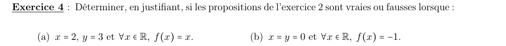
a) Cas \(x=2,\ y=3,\ f=\mathrm{id}\) (\(f(t)=t\))
Étape 1 : les valeurs utiles
\[ x^2+y^2=13,\quad x-y=-1,\quad x+y=5,\quad f(x)=2,\quad f(y)=3,\quad f(x-y)=-1 \]Étape 2 : on évalue chaque proposition
| Prop. | Évaluation | Valeur |
|---|---|---|
| (a) | \(x{=}2\) V ; \(y{=}3\geqslant 3\) V, donc (F ou V) = V | V |
| (b) | \(13<4\) F, donc « F et … » = F | F |
| (c) | \(y{=}3\geqslant -1\) V, donc « V ou … » = V | V |
| (d) | \(2\leqslant 1\) F ; \(f(x){=}2\neq 0\) F : F ou F | F |
| (e) | \(2>2\) F et \(3<1\) F : (F ou F) et … = F | F |
| (f) | 2ᵉ bloc : \(f(-1){=}-1<0\) V et \(2\neq 3\) V | V |
| (g) | \(f(x){=}2\neq f(y){=}3\) : hypothèse fausse | V |
| (h) | \(x>0\) V, mais \(y{=}3\leqslant 1\) F : V \(\Rightarrow\) F | F |
| (i) | \(13\leqslant 1\) F : hypothèse fausse | V |
| (j) | \(x{=}2\neq 0\) : hypothèse fausse | V |
b) Cas \(x=y=0,\ f\equiv -1\) (\(f(t)=-1\))
Étape 1 : les valeurs utiles
\[ x^2+y^2=0,\quad x-y=0,\quad x+y=0,\quad f(x)=f(y)=f(x-y)=-1 \]Étape 2 : on évalue chaque proposition
| Prop. | Évaluation | Valeur |
|---|---|---|
| (a) | \(x{=}0\neq 2\) : « F et … » = F | F |
| (b) | \(0<4\) V ; \(f(x)\geqslant f(y)\) V | V |
| (c) | \(0\geqslant -1\) V | V |
| (d) | \(0\leqslant 1\) V | V |
| (e) | \(y{=}0<1\) V et \(x{+}y{=}0\) V | V |
| (f) | \(0>1\) F ; \(f(x)\neq f(y)\) F : F ou F | F |
| (g) | \(f(x){=}f(y)\) V et \(x{=}y\) V : V \(\Rightarrow\) V | V |
| (h) | \(0>0\) F : hypothèse fausse | V |
| (i) | \(0\leqslant 1\) V ; \(f(y){=}-1<0\) V | V |
| (j) | \(x{+}y{=}0\neq 2\) : hypothèse fausse | V |
a) \(\forall x\in\mathbb R,\ x\geqslant 1\)
Étape 1 : chercher un contre-exemple
\(x=0\) donne \(0<1\).
b) \(\exists x\in\mathbb R,\ -1\leqslant x\leqslant 1\)
Étape 1 : exhiber un exemple
\(x=0\) vérifie \(-1\leqslant 0\leqslant 1\).
c) \(\exists n,\exists p\in\mathbb N,\ n=3p+2\)
Étape 1 : exhiber un exemple
\(p=0\) et \(n=2\) : \(2=3\times 0+2\).
d) \(\forall n\in\mathbb N,\exists p\in\mathbb N,\ n=3p+2\)
Étape 1 : chercher un contre-exemple
Pour \(n=0\), il faudrait \(3p+2=0\), soit \(p=-\tfrac23\notin\mathbb N\).
e) \(\forall y\in\mathbb N,\exists x\in\mathbb R,\ y=x^2\)
Étape 1 : construire \(x\) pour chaque \(y\)
Tout \(y\in\mathbb N\) est positif : \(x=\sqrt y\) est un réel et \(x^2=y\).
f) \(\forall y\in\mathbb N,\exists x\in\mathbb R,\ x=y^2\)
Étape 1 : construire \(x\) pour chaque \(y\)
On prend \(x=y^2\), qui est un réel.
g) \(\exists y\in\mathbb N,\forall x\in\mathbb R,\ x=y^2\)
Étape 1 : montrer qu'aucun \(y\) ne convient
Pour \(y\) fixé, \(x=y^2+1\) donne \(x\neq y^2\). Donc aucun \(y\) ne marche pour tous les \(x\).
h) \(\exists x\in\mathbb R,\forall y\in\mathbb R,\ (x+y)^2=x^2+y^2\)
Étape 1 : simplifier le cœur
Étape 2 : choisir \(x\)
Avec \(x=0\), on a \(xy=0\) pour tout \(y\).
i) \(\forall x\in\mathbb R,\exists y\in\mathbb R,\forall z\in\mathbb R,\ x+y+z=0\)
Étape 1 : nier pour trouver un contre-exemple
Une fois \(x\) et \(y\) fixés, \(x+y+z=0\) n'est vrai que pour \(z=-x-y\). Avec \(z=-x-y+1\), on obtient \(x+y+z=1\neq 0\).
j) \(\forall x\in\mathbb R,\exists y\in\mathbb R,\ (x<y\Rightarrow x+y=2)\)
Étape 1 : choisir \(y\) en fonction de \(x\)
On prend \(y=2-x\). Alors \(x+y=2\) : la conclusion est vraie.
Étape 2 : conclure sur l'implication
Une implication dont la conclusion est vraie est vraie, quelle que soit l'hypothèse.
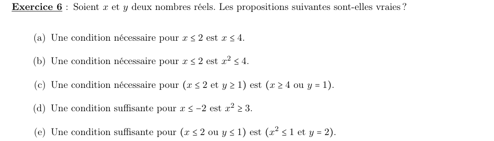
a) C.N. pour \(x\leqslant 2\) : \(x\leqslant 4\) ?
Étape 1 : l'implication à tester
\[ x\leqslant 2 \;\Rightarrow\; x\leqslant 4 \]Étape 2 : la vérifier
Si \(x\leqslant 2\), alors \(x\leqslant 2\leqslant 4\).
b) C.N. pour \(x\leqslant 2\) : \(x^2\leqslant 4\) ?
Étape 1 : l'implication à tester
\[ x\leqslant 2 \;\Rightarrow\; x^2\leqslant 4 \]Étape 2 : contre-exemple
\(x=-5\) vérifie \(x\leqslant 2\), mais \(x^2=25>4\).
c) C.N. pour \((x\leqslant 2\text{ et }y\geqslant 1)\) : \((x\geqslant 4\text{ ou }y=1)\) ?
Étape 1 : l'implication à tester
\[ (x\leqslant 2\text{ et }y\geqslant 1) \;\Rightarrow\; (x\geqslant 4\text{ ou }y=1) \]Étape 2 : contre-exemple
\(x=0,\ y=5\) : l'hypothèse est vraie, mais \(x\geqslant 4\) et \(y=1\) sont faux.
d) C.S. pour \(x\leqslant -2\) : \(x^2\geqslant 3\) ?
Étape 1 : l'implication à tester
\[ x^2\geqslant 3 \;\Rightarrow\; x\leqslant -2 \]Étape 2 : contre-exemple
\(x=2\) : \(x^2=4\geqslant 3\), mais \(2\leqslant -2\) est faux.
e) C.S. pour \((x\leqslant 2\text{ ou }y\leqslant 1)\) : \((x^2\leqslant 1\text{ et }y=2)\) ?
Étape 1 : l'implication à tester
\[ (x^2\leqslant 1\text{ et }y=2) \;\Rightarrow\; (x\leqslant 2\text{ ou }y\leqslant 1) \]Étape 2 : la vérifier
Si \(x^2\leqslant 1\), alors \(-1\leqslant x\leqslant 1\), donc \(x\leqslant 2\). Le premier morceau du « ou » est vrai.
Partie 3 — Tables de vérité
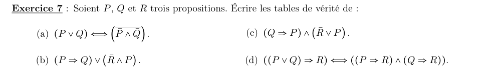
a) \((P\vee Q)\iff(\overline P\wedge\overline Q)\)
Étape 1 : remarque
On compare \(P\vee Q\) à sa propre négation. Elles n'ont jamais la même valeur.
Étape 2 : la table
| \(P\) | \(Q\) | \(P\vee Q\) | \(\overline P\wedge\overline Q\) | \(\iff\) |
|---|---|---|---|---|
| V | V | V | F | F |
| V | F | V | F | F |
| F | V | V | F | F |
| F | F | F | V | F |
b) \((P\Rightarrow Q)\vee(\overline R\wedge P)\)
Étape 1 : colonnes intermédiaires, puis le « ou »
| \(P\) | \(Q\) | \(R\) | \(P\Rightarrow Q\) | \(\overline R\wedge P\) | \(\vee\) |
|---|---|---|---|---|---|
| V | V | V | V | F | V |
| V | V | F | V | V | V |
| V | F | V | F | F | F |
| V | F | F | F | V | V |
| F | V | V | V | F | V |
| F | V | F | V | F | V |
| F | F | V | V | F | V |
| F | F | F | V | F | V |
Étape 2 : lecture
Un « ou » est faux seulement si ses deux membres le sont : une seule ligne.
c) \((Q\Rightarrow P)\wedge(\overline R\vee P)\)
Étape 1 : colonnes intermédiaires, puis le « et »
| \(P\) | \(Q\) | \(R\) | \(Q\Rightarrow P\) | \(\overline R\vee P\) | \(\wedge\) |
|---|---|---|---|---|---|
| V | V | V | V | V | V |
| V | V | F | V | V | V |
| V | F | V | V | V | V |
| V | F | F | V | V | V |
| F | V | V | F | F | F |
| F | V | F | F | V | F |
| F | F | V | V | F | F |
| F | F | F | V | V | V |
Étape 2 : lecture
Dès que \(P\) est vraie, les deux membres sont vrais. Si \(P\) est fausse, il faut \(Q\) et \(R\) faux.
d) \(((P\vee Q)\Rightarrow R)\iff((P\Rightarrow R)\wedge(Q\Rightarrow R))\)
Étape 1 : les deux membres de l'équivalence
| \(P\) | \(Q\) | \(R\) | \((P{\vee}Q){\Rightarrow}R\) | \((P{\Rightarrow}R){\wedge}(Q{\Rightarrow}R)\) | \(\iff\) |
|---|---|---|---|---|---|
| V | V | V | V | V | V |
| V | V | F | F | F | V |
| V | F | V | V | V | V |
| V | F | F | F | F | V |
| F | V | V | V | V | V |
| F | V | F | F | F | V |
| F | F | V | V | V | V |
| F | F | F | V | V | V |
Étape 2 : lecture
Les deux colonnes centrales sont identiques ligne par ligne.
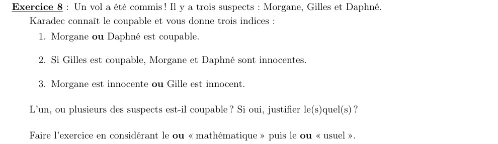
1) Avec le « ou » mathématique (inclusif)
Étape 1 : traduire les indices
\[ (1)\ m\vee d \qquad (2)\ g\Rightarrow(\lnot m\wedge\lnot d) \qquad (3)\ \lnot m\vee\lnot g \]Étape 2 : Gilles est innocent (par l'absurde)
On suppose \(g\) vrai. L'indice (2) impose \(m\) et \(d\) faux. Alors \(m\vee d\) est faux : l'indice (1) est contredit. Donc \(g\) est faux.
Étape 3 : ce qui reste
Avec \(g\) faux, les indices (2) et (3) sont automatiquement vrais. Il ne reste que \(m\vee d\) :
- \(m\) vrai, \(d\) faux ;
- \(m\) faux, \(d\) vrai ;
- \(m\) et \(d\) vrais.
2) Avec le « ou » usuel (exclusif)
Étape 1 : Gilles reste innocent
Le raisonnement de la question 1 marche encore : si \(g\) est vrai, \(m\) et \(d\) sont faux, et l'indice (1) est contredit.
Étape 2 : l'indice (3)
« Morgane innocente » ou « Gilles innocent », exactement un des deux. « Gilles innocent » est vrai, donc « Morgane innocente » est faux : Morgane est coupable.
Étape 3 : l'indice (1)
Exactement une coupable parmi Morgane et Daphné. Morgane l'est, donc Daphné est innocente.
Étape 4 : vérification
L'indice (2) a une hypothèse fausse (\(g\) faux) : il est vrai. Les trois indices sont satisfaits.
Partie 4 — Appliquer les types de raisonnement
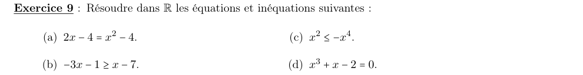
a) \(2x-4=x^2-4\)
Étape 1 : tout passer du même côté
\[ 2x-4=x^2-4 \iff x^2-2x=0 \]Étape 2 : factoriser
b) \(-3x-1\geqslant x-7\)
Étape 1 : regrouper
\[ -3x-x\geqslant -7+1 \iff -4x\geqslant -6 \]Étape 2 : diviser par \(-4\)
c) \(x^2\leqslant -x^4\)
Étape 1 : tout passer à gauche et factoriser
\[ x^2+x^4\leqslant 0 \iff x^2(1+x^2)\leqslant 0 \]Étape 2 : étudier le signe
\(1+x^2>0\) toujours. Il faut donc \(x^2\leqslant 0\). Or \(x^2\geqslant 0\) : seul \(x=0\) convient.
d) \(x^3+x-2=0\)
Étape 1 : racine évidente
\[ 1^3+1-2=0 \]Donc \(x=1\) est racine, et \((x-1)\) se met en facteur.
Étape 2 : factoriser
On cherche \(x^3+x-2=(x-1)(x^2+bx+c)\). En développant : \(b-1=0\) et \(-c=-2\), donc \(b=1,\ c=2\).
\[ x^3+x-2=(x-1)(x^2+x+2) \]Étape 3 : le facteur du second degré
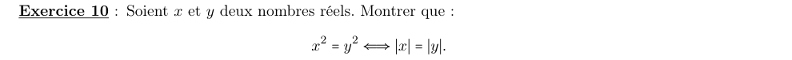
1) Démonstration de l'équivalence
On raisonne par équivalences successives.
Étape 1 : écrire \(x^2\) avec la valeur absolue
Étape 2 : « enlever » le carré
On l'applique à \(a=|x|\geqslant 0\) et \(b=|y|\geqslant 0\) :
\[ |x|^2=|y|^2 \iff |x|=|y| \]Autre voie : \(x^2-y^2=(x-y)(x+y)=0\iff x=y\) ou \(x=-y\iff|x|=|y|\).
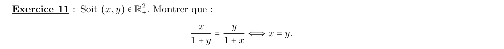
1) Sens \(\Leftarrow\)
Étape 1 : remplacer \(y\) par \(x\)
Si \(x=y\), les deux fractions s'écrivent \(\dfrac{x}{1+x}\) : elles sont égales.
2) Sens \(\Rightarrow\)
Étape 1 : produit en croix
Comme \(x,y\geqslant 0\), on a \(1+x>0\) et \(1+y>0\). On peut multiplier en croix :
\[ \frac{x}{1+y}=\frac{y}{1+x} \iff x(1+x)=y(1+y) \iff x+x^2=y+y^2 \]Étape 2 : factoriser
Étape 3 : conclure
Comme \(x,y\geqslant 0\), \(x+y+1\geqslant 1\) : ce facteur ne s'annule pas. Donc \(x-y=0\).
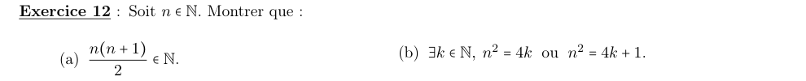
a) \(\dfrac{n(n+1)}{2}\in\mathbb N\)
On raisonne par disjonction de cas selon la parité de \(n\).
Étape 1 : \(n\) pair, \(n=2k\)
\[ \frac{n(n+1)}{2}=\frac{2k(2k+1)}{2}=k(2k+1)\in\mathbb N \]Étape 2 : \(n\) impair, \(n=2k+1\)
\[ \frac{n(n+1)}{2}=\frac{(2k+1)(2k+2)}{2}=(2k+1)(k+1)\in\mathbb N \]b) \(\exists k\in\mathbb N,\ n^2=4k\) ou \(n^2=4k+1\)
On raisonne à nouveau par disjonction de cas.
Étape 1 : \(n\) pair, \(n=2p\)
\[ n^2=4p^2 \]Avec \(k=p^2\) : \(n^2=4k\).
Étape 2 : \(n\) impair, \(n=2p+1\)
\[ n^2=4p^2+4p+1=4(p^2+p)+1 \]Avec \(k=p^2+p\) : \(n^2=4k+1\).
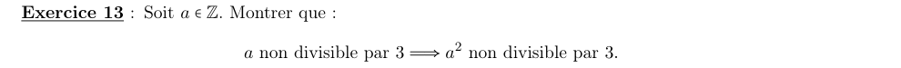
1) Démonstration
On raisonne par disjonction de cas sur le reste de \(a\) modulo 3.
Étape 1 : cas \(a=3k+1\)
\[ a^2=9k^2+6k+1=3(3k^2+2k)+1 \]Reste 1 : \(a^2\) n'est pas divisible par 3.
Étape 2 : cas \(a=3k+2\)
\[ a^2=9k^2+12k+4=3(3k^2+4k+1)+1 \]Reste 1 : \(a^2\) n'est pas divisible par 3.
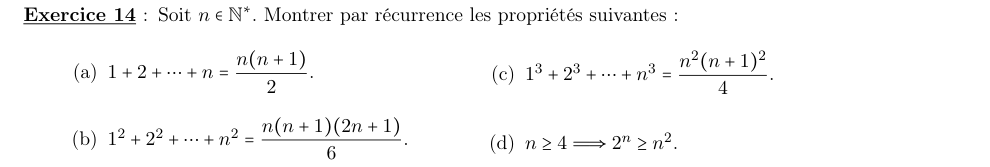
a) \(1+2+\cdots+n=\dfrac{n(n+1)}{2}\)
On raisonne par récurrence sur \(n\geqslant 1\). On note \(S_n=1+2+\cdots+n\).
Étape 1 : initialisation (\(n=1\))
\[ S_1=1 \qquad\text{et}\qquad \frac{1\times 2}{2}=1 \]Étape 2 : hérédité
On suppose \(S_n=\dfrac{n(n+1)}{2}\). On ajoute le terme suivant :
\[ S_{n+1}=S_n+(n+1)=\frac{n(n+1)}{2}+(n+1) \]On factorise par \((n+1)\) :
\[ S_{n+1}=(n+1)\left(\frac n2+1\right)=\frac{(n+1)(n+2)}{2} \]C'est la formule au rang \(n+1\).
b) \(1^2+2^2+\cdots+n^2=\dfrac{n(n+1)(2n+1)}{6}\)
On raisonne par récurrence. On note \(S_n=\sum_{k=1}^n k^2\).
Étape 1 : initialisation (\(n=1\))
\[ S_1=1 \qquad\text{et}\qquad \frac{1\times 2\times 3}{6}=1 \]Étape 2 : hérédité
On suppose la formule vraie au rang \(n\). On factorise par \(\dfrac{n+1}{6}\) :
\[ S_{n+1}=\frac{n(n+1)(2n+1)}{6}+(n+1)^2=\frac{n+1}{6}\big[n(2n+1)+6(n+1)\big] \]On factorise le crochet (racines \(-2\) et \(-\tfrac32\)) :
\[ n(2n+1)+6(n+1)=2n^2+7n+6=(n+2)(2n+3) \] \[ S_{n+1}=\frac{(n+1)(n+2)(2n+3)}{6} \]C'est bien la formule au rang \(n+1\), car \((n+1)+1=n+2\) et \(2(n+1)+1=2n+3\).
c) \(1^3+2^3+\cdots+n^3=\dfrac{n^2(n+1)^2}{4}\)
On raisonne par récurrence. On note \(S_n=\sum_{k=1}^n k^3\).
Étape 1 : initialisation (\(n=1\))
\[ S_1=1 \qquad\text{et}\qquad \frac{1\times 4}{4}=1 \]Étape 2 : hérédité
On suppose la formule vraie au rang \(n\). On factorise par \((n+1)^2\) :
\[ S_{n+1}=\frac{n^2(n+1)^2}{4}+(n+1)^3=(n+1)^2\left[\frac{n^2}{4}+n+1\right] \] \[ S_{n+1}=(n+1)^2\,\frac{n^2+4n+4}{4}=\frac{(n+1)^2(n+2)^2}{4} \]d) \(n\geqslant 4\Rightarrow 2^n\geqslant n^2\)
On raisonne par récurrence à partir du rang 4.
Étape 1 : initialisation (\(n=4\))
\[ 2^4=16\geqslant 16=4^2 \]Étape 2 : hérédité, première minoration
Soit \(n\geqslant 4\) tel que \(2^n\geqslant n^2\). On multiplie par 2 :
\[ 2^{n+1}=2\times 2^n\geqslant 2n^2 \]Étape 3 : comparer \(2n^2\) et \((n+1)^2\)
\[ 2n^2-(n+1)^2=n^2-2n-1=(n-1)^2-2 \]Pour \(n\geqslant 4\), \((n-1)^2\geqslant 9>2\), donc \(2n^2\geqslant(n+1)^2\).
Étape 4 : enchaîner
\[ 2^{n+1}\geqslant 2n^2\geqslant (n+1)^2 \]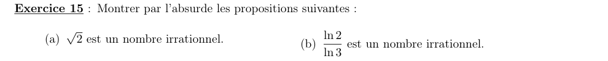
a) \(\sqrt2\) est irrationnel
On raisonne par l'absurde.
Étape 1 : l'hypothèse absurde
On suppose \(\sqrt2=\dfrac pq\), avec \(p,q\in\mathbb N^*\) et la fraction irréductible.
Étape 2 : élever au carré
\[ 2=\frac{p^2}{q^2} \iff p^2=2q^2 \]Étape 3 : \(p\) est pair
\(p^2\) est pair, donc \(p\) est pair : \(p=2p'\).
Étape 4 : \(q\) est pair
\[ 4p'^2=2q^2 \iff q^2=2p'^2 \]\(q^2\) est pair, donc \(q\) est pair.
Étape 5 : contradiction
\(p\) et \(q\) sont pairs : la fraction se simplifie par 2, alors qu'on l'a supposée irréductible.
b) \(\dfrac{\ln 2}{\ln 3}\) est irrationnel
On raisonne par l'absurde.
Étape 1 : l'hypothèse absurde
Le nombre est strictement positif. On suppose \(\dfrac{\ln2}{\ln3}=\dfrac pq\), avec \(p,q\in\mathbb N^*\).
Étape 2 : se débarrasser des logarithmes
Étape 3 : contradiction par la parité
- \(2^q\) est pair, car \(q\geqslant 1\).
- \(3^p\) est impair, produit de nombres impairs.
Un entier ne peut pas être à la fois pair et impair.
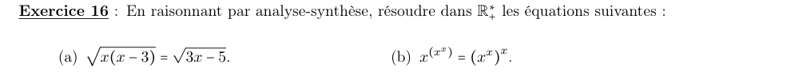
a) \(\sqrt{x(x-3)}=\sqrt{3x-5}\)
On raisonne par analyse-synthèse.
Étape 1 : analyse, conditions d'existence
On suppose \(x\in\mathbb R_+^*\) solution. Les racines exigent \(x(x-3)\geqslant 0\) et \(3x-5\geqslant 0\), donc en particulier \(x\geqslant\tfrac53\).
Étape 2 : analyse, élever au carré
Les deux membres sont positifs : on peut élever au carré.
\[ x(x-3)=3x-5 \iff x^2-6x+5=0 \iff (x-1)(x-5)=0 \]Candidats : \(x=1\) ou \(x=5\). La condition \(x\geqslant\tfrac53\) élimine \(x=1\).
Étape 3 : synthèse
Pour \(x=5\) :
\[ \sqrt{5\times 2}=\sqrt{10} \qquad\text{et}\qquad \sqrt{15-5}=\sqrt{10} \]b) \(x^{(x^x)}=(x^x)^x\)
On raisonne par analyse-synthèse.
Étape 1 : simplifier le membre de droite
L'équation devient \(x^{x^x}=x^{x^2}\).
Étape 2 : analyse, cas \(x=1\)
Les deux membres valent 1 : \(x=1\) est candidat.
Étape 3 : analyse, cas \(x\neq 1\)
Pour \(x>0\) et \(x\neq 1\), la fonction \(t\mapsto x^t=e^{t\ln x}\) est injective (\(\ln x\neq 0\)). On l'utilise deux fois :
\[ x^{x^x}=x^{x^2} \iff x^x=x^2 \iff x=2 \]Candidats : \(x=1\) et \(x=2\).
Étape 4 : synthèse
- \(x=1\) : \(1^{1}=1\) et \((1^1)^1=1\).
- \(x=2\) : \(2^{(2^2)}=2^4=16\) et \((2^2)^2=4^2=16\).
Chapitre 1 du cours M01 (S1). Sources : Chap_1.pdf (cours magistral) et TD01 — Logique et raisonnement. Corrigé rédigé intégralement (pas de corrigé officiel fourni).
📂 Documents donnés
Tous les documents originaux liés à ce chapitre (cours magistral, TD, corrigés…). Cliquez pour ouvrir le PDF.
Cours (CM)
TD (énoncé)
Les documents sont inclus dans ce dossier (sous-dossier documents\) — le paquet est autonome et partageable tel quel.